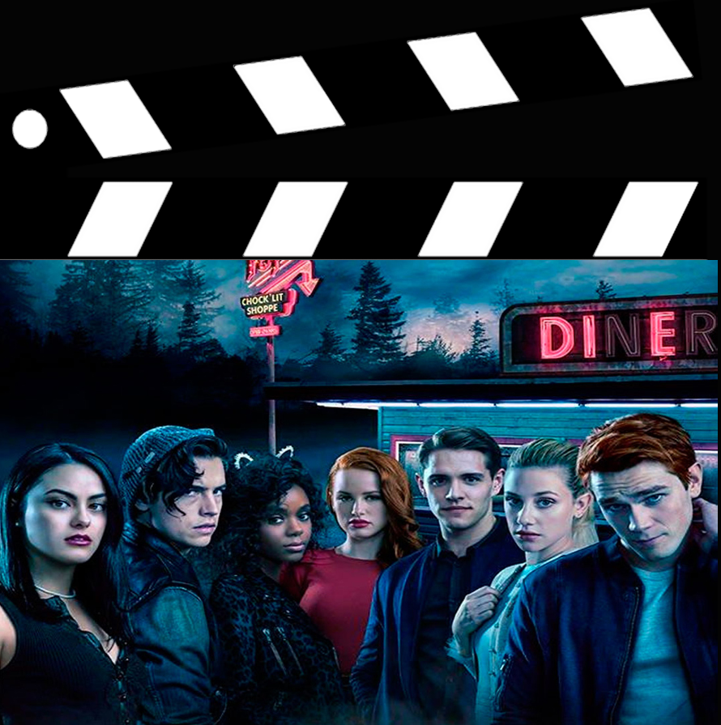

En el capitulo empiezan mostrado una escena donde se ve a Cheryl acompañando a Jason a escaparse, minutos antes de la muerte misteriosa. Cuando todos se enteran lo empiezan a buscar y a investigar que paso. Mientras tanto Betty se encuentra de nuevo con Archie y esta decidida a decirle que le gusta. Pero justo cuando fueron a comer se encuentran con Verónica, una chica que llega de New York, Archie se enamora y empiezan a hablar. Ellos poco a poco se van uniendo. Hasta que se enamoraron los dos por un juego que hicieron en una fiesta. El capitulo termina con Archie contándole a Betty y ella enojándose por la situación.
